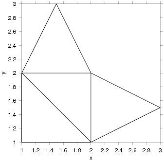

Chapters:
1: Introduction
2: Simple example
3: Invocation
4: Finer Control
5: X-Y Plots
6: Contour Plots
7: Image Plots
8: Examples
9: Gri Commands
10: Programming
11: Environment
12: Emacs Mode
13: History
14: Installation
15: Gri Bugs
16: Test Suite
17: Gri in Press
18: Acknowledgments
19: License
Indices:
Concepts
Commands
Variables
|
8.11: Finite Element Model mesh
Finite Element Models (used in fluid mechanics) employ non-rectangular
meshes, and plotting these meshes requires a few intermediate steps.
Consider the common case of triangular elements. Suppose two data files
exist describing the mesh, the first, `model.nodes' say, consists
of a description of the x-y coordinates of the nodes (vertices) of the
triangles. The second, `model.elements' say, consists of a
description of which triplet of nodes defines each triangle in the mesh.
Here, from a sample application, is a node file called
`model.nodes':
1 1 1
2 2 1
3 1 2
4 3 1.5
5 2 2
6 1.5 3
|
Here is the corresponding file of the elements, called `model.elements'
1 1 2 3
2 2 5 3
3 2 4 5
4 3 5 6
|
In each of these files, the first column is a reference number. Thus,
`model.elements' indicates that the first triangle is defined by
the nodes numbered `1', `2' and `3' as defined in
`model.nodes'. More specifically, the triangle is defined by
vertices at (x,y) locations (1,1), (2,1), and (1,2).
A Gri program, named `FEM.gri', to draw the nodes is the following.
set missing value -99.99
# Create data using perl-script ...
system FEM.pl model.nodes model.elements > tmp
# ... then plot it ...
open tmp
read columns x y
close
draw curve
# ... and, finally, clean up the temporary file
system rm tmp
|
The work of interpreting the data files is done by the perlscript that
follows, named `FEM.pl'
#!/usr/bin/perl -w
$missing = -99.99; # missing value
$node_file = $ARGV[0];
$element_file = $ARGV[1];
open (NODE, $node_file)
or die "Cannot open '$node_file' file";
open (ELEM, $element_file)
or die "Cannot open '$element_file' file";
# Read in node information, creating arrays
# named $node_x[] and $node_y[]. Check that
# the first column (the index) makes sense.
$max_node = 1;
while(<NODE>) {
($index, $node_x[$max_node], $node_y[$max_node])
= split;
die "Node mismatch at index=$index"
if ($index != $max_node);
$max_node++;
}
# Read in triangle elements, into arrays
# $a[], $b[], and $c[]. Check that the
# first column (the index) makes sense.
$max_elem = 1;
while(<ELEM>) {
($index, $a[$max_elem], $b[$max_elem], $c[$max_elem])
= split;
die "Element mismatch at index=$index"
if ($index != $max_elem);
$max_elem++;
}
# Print out triangles suitable for plotting in gri.
for ($i = 1; $i < $max_elem; $i++) {
print $node_x[$a[$i]], " ", $node_y[$a[$i]], "\n";
print $node_x[$b[$i]], " ", $node_y[$b[$i]], "\n";
print $node_x[$c[$i]], " ", $node_y[$c[$i]], "\n";
# Repeat first, to close the triangle.
print $node_x[$a[$i]], " ", $node_y[$a[$i]], "\n";
print $missing, " ", $missing, "\n";
}
|
The resultant image is below.

|